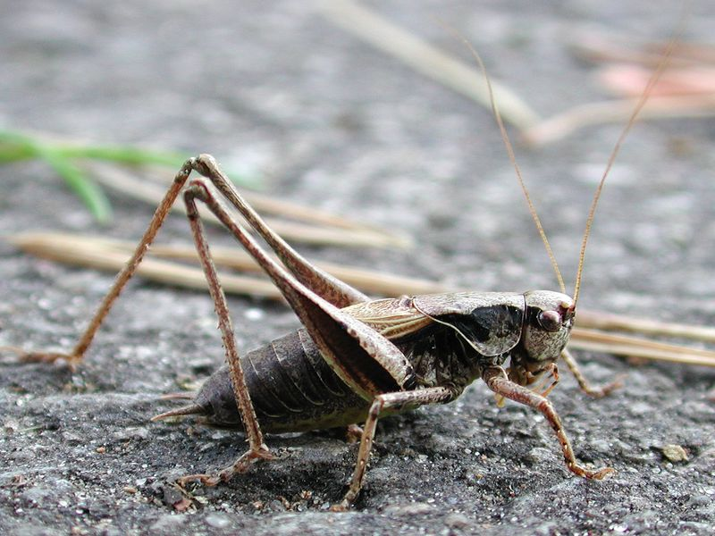

Strauchschrecke
Pholidoptera griseoaptera
Zu den sommerlichen „Musikanten" in buschreichem Gelände gehört die Strauchschrecke. Wir können ihr Zirpen bis in die Nacht hinein vernehmen. Besondere Merkmale sind lange Fühler und zu Stummeln reduzierte Flügel.